「Pacing the Frontier」= CapEx Peak-out이 아님. 더 강한 모델 → 더 많은 토큰. 9/14 SOX 급락은 AI 수요 훼손보다 속도조절 우려 + 10년물 5% + 유가 $100대가 겹친 Risk-off.
Amodei의 pacing은 모델 출시·능력 조절. Anthropic은 최대 $517B 컴퓨팅 계약·14.8GW를 이미 선점. Pacing = Capability 속도 ≠ Compute 속도.
Training → Inference → Agentic Inference. Token↑ → Context↑ → KV Cache↑ → Server DRAM + NAND/eSSD. HBM만 보면 틀린 그림.
7/31 이후 유가 +18.8%·10년물 +4.8%에도 샌디스크 +34.5%·하이닉스 ADR +32.2%. 금리에도 실적이 버티는 기업이 희소 자산.
「Pacing the Frontier」는 AI의 종말이 아니라 AI 투자 축의 이동 — “더 강한 모델”에서 “더 많은 토큰”으로. NVIDIA 추론 수혜는 지속되나 최신 GPU 세대교체 속도는 불확실. Memory(HBM+Server DRAM+NAND)의 수요 기반이 상대적으로 넓다. 다만 “NVIDIA보다 Micron 확실 우위”까지는 가정 필요(논리 70~80% 타당, inference 과소평가 주의).
| 주제 | 원문 파일 | 투자자가 가져갈 것 |
|---|---|---|
| 속도조절 / 종말론 | AI 속도조절 2견해 · 종말론 · TalkFile · 9/14 미국장 | Peak-out 아님. 4개 Timing 점검. |
| Pacing the Frontier | Pacing PDF + 미국 분석가 코멘트 | Token Economy. NVDA vs Memory 양면. |
| 매크로 New Normal | Where is market headed · 9/13 장기금리 · 매크로 9.14 | 바닥 금리↑와 장기채 가격↑는 모순 아님. |
| PER vs 10년물 | S&P500 PER vs 10년물 | 26E 21배 / 27E 18.5배. 고금리+고PER 이례적. |
| 메모리 밸류 | 9/11·9/14 밸류 시트 | 본주 할인 vs ADR 프리미엄 40% too high. |
| 전력 / 연료전지 | 연료전지 PDF | Time-to-Power. 두산 추가수주가 7~8만 조건. |
| 개별 종목 | SFA · PSK · 비에이치 · 휴머노이드 · 무라타 | 후공정·패키징·MLCC·로봇 부품. |
과거 질문: AI가 틀린 답을 하면? 현재 질문: AI가 스스로 판단하고 행동하면 어떻게 통제할 것인가.
실제 위험이 있다. 발전 속도가 본인 예상보다 빨랐다. 새 모델마다 충분한 안전 테스트. 킬 스위치는 “좋은 아이디어일 수 있다”. 독립 평가자 = 식품 검사관. 중국이 멈추지 않는데 미국만 멈추는 것이 가장 어려운 딜레마.
AI 개발 전면 중단이 아님. 데이터센터·GPU 조달 축소가 아님. Anthropic은 11개월간 최대 $517B 컴퓨팅 계약, 최소 14.8GW. Google Cloud 5년 $200B. pacing = 모델 출시 속도 조절.
| 층 | 대상 | 의미 |
|---|---|---|
| ① | 모델 | 위험한 행동 차단 |
| ② | Agent | 특정 행동 권한 제한 |
| ③ | 시스템 | 네트워크·컴퓨터 접근 차단 |
| ④ | 인프라 | GPU/서버 실행 중단 |
| ⑤ | 인간 | 최종 승인권 |
| ⑥ | 제3자 | 독립 안전성 검사 (Amodei가 특히 강조) |
한 줄: “AI를 멈추자는 이야기가 아니라, Agent가 통제권을 넘을 가능성에 대비해 브레이크를 장착하고 계속 달리자.”
실존적 위험, RSI 초기 단계. AI가 코드·실험·분석 등 R&D 자체에 참여.
막대한 CapEx를 정당화하고 자금을 끌어들이는 서사.
현재 능력을 AGI에 붙여 기업가치를 부풀림.
대중 1차 반응은 “세 가지가 섞여 있다”. 원문은 여기에 4개 독해 프레임을 병치한다.
| 프레임 | 핵심 | 투자 함의 |
|---|---|---|
| 인류애 / 당위 | 1953 Atoms for Peace ↔ 2026 AI for Humanity. 능력↑가 통제력을 앞지름. | 가드레일은 필요. 그러나 국제 통제는 핵보다 더 어렵다. |
| 실패 대비 서사 | LLM을 AGI에 연결. AGI 없으면 $2T+ CapEx가 무의미하다는 비판. 실패 시 “안전 때문에 늦췄다 / 가격을 못 받았다” 양다리. | 와닿는 비판. FACT는 나중에 밝혀짐. |
| 순리론 | 위험은 진심, 가드레일도 옳다. 그래도 수요·공급을 알면 투자 기회. Picks and Shovels. | 인프라·장비·부품이 직접 수혜. |
| 냉소 / 시진핑 BS | 중국이 일축하면 미국이 진지하게 받아들일 이유 소멸. 가드레일 유도/강제는 결국 어렵다. | 미·중 동시 감속은 게임이론상 불안정. |
메모리/HBM 논리를 훼손하는 뉴스가 아니라 수요의 방향이 아니라 시간표를 점검하는 뉴스.
병목이 인력 → 컴퓨팅으로 이동. 규제 비용은 빅테크 수직계열화 가치↑. 모델 기업은 클라우드·고객 플랫폼이 필요.
| 주체 | 입장 | 시장 영향 |
|---|---|---|
| Trump | “Whoever wins AI, wins.” 중국 앞선 만큼 늦출 이유 없다. 가드레일은 가능. | 개발·투자 지속에 긍정. 주말 Perp 매도의 완충. |
| Amodei | 안전장치가 능력 속도를 못 따라감. 공동 속도조절·독립 평가. | Safety 규제 논쟁 확대. 규제 설계권 선점. |
| Altman · Musk | Amodei 동조, 독립 전문가 접근 확대. 동시에 Musk는 Grok 5=AGI. | 업계 공감 + 경쟁은 계속. OpenAI IPO 연기 언급은 파생 매도. |
| 백악관 (Hassett) | 자율규제·시장규율로 관리 가능. | 강제 규제보다 성장 우선. |
| 의회 | 민주=감독, 공화=혁신·대중 경쟁. | 규제 불확실성 지속. |
| Karp (Palantir) | 적대국이 안 멈추는데 미국만 감속은 안보 위험. | 단독 감속 불가 논리 강화. |
“AI Safety 논쟁은 확대되지만, 미국 정부의 기본 방향은 안전장치는 보완하되 AI 패권 경쟁과 투자는 늦추지 않는다.” 주말 뉴스의 펀더멘털 충격은 제한적일 가능성.
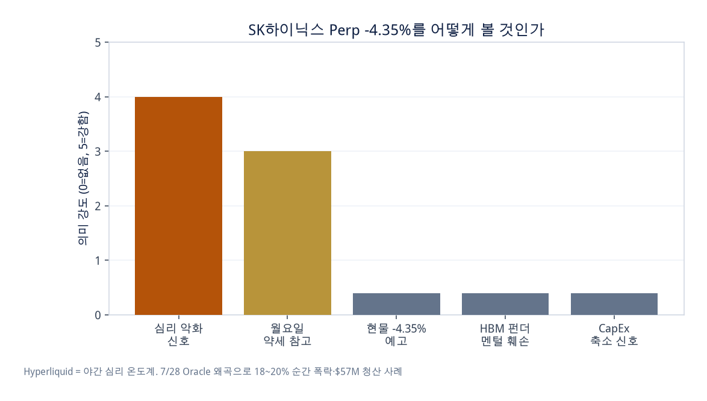
원문 핵심 70~80%는 타당. 약점은 NVIDIA를 Frontier GPU 회사로만 보는 것. Micron(및 HBM+Commodity DRAM) 논리는 오히려 강하다.
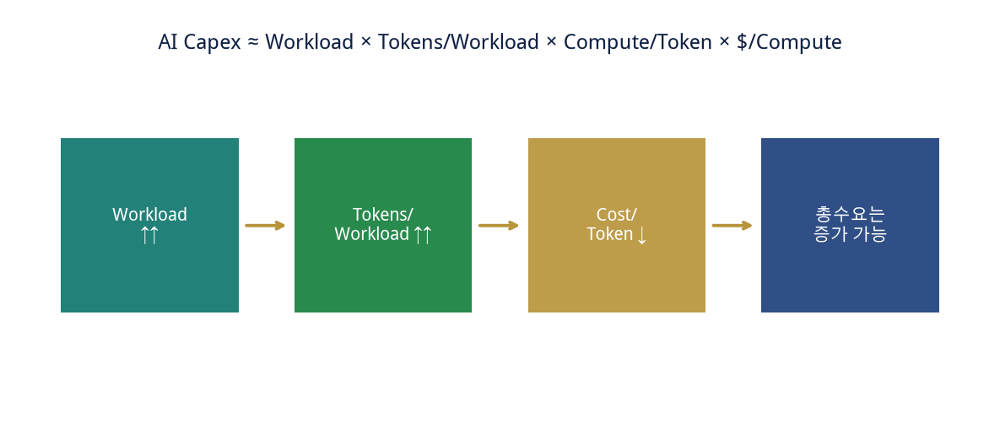
Frontier slowdown → NVIDIA ↓ → HBM ↓ → Micron/하이닉스 ↓
Token ↑ → Context ↑ → KV Cache ↑ → Memory Capacity ↑ → Server DRAM ↑ → Storage ↑. “DRAM도 AI” 질문과 정확히 연결.
| 질문 | Yes | No |
|---|---|---|
| Inference가 늘면 최신 NVIDIA GPU가 필요한가? | 복잡한 reasoning, long-context, multimodal, agentic은 고연산 필요 | 단순 inference는 저가 GPU·ASIC·CPU·accelerator로 가능 |
진짜 위험은 Inference 감소가 아니라 Inference 증가분 중 NVIDIA 점유율 하락. Agent가 늘수록 추론이 복잡해지고 reasoning token·tool use가 늘어 Training 둔화를 상쇄할 수 있다.
Agentic AI는 연산량만이 아니라 Memory Intensity를 높인다. 서버 구성이 GPU+HBM에서 GPU + HBM + CPU + DDR5/LPDDR + CXL + SSD 계층으로 가면 TAM이 확장된다. “Micron의 AI 수요는 HBM에만 묶여 있지 않다.”
학습은 한 철, Agent 추론은 24시간. 패턴이 안정되면 TPU / Trainium / Inferentia / Maia가 비용·전력에 유리. 그러나 표준화 전·복잡한 초기 업무는 범용 GPU 중심. ASIC이 GPU를 대체한다기보다 대규모·반복 추론부터 비중이 올라가는 구조. 결과적으로 HBM뿐 아니라 DRAM·서버 메모리·네트워크/패키징 수요가 장기화.
| # | 발언 | 브리핑과의 접점 |
|---|---|---|
| 1 | 2030 AI 인프라 $3~4T. Retrieval → Generative computing. Extreme co-design. | 스토리지 중심이 아니라 계속 답을 만드는 계층. |
| 2 | 다음 ROI 대형 시장 = 사이버보안 (red/blue teaming). | 9/14 IGV +5% 순환과 맞닿음. |
| 3 | 칩 회사가 아니라 AI 팩토리. NVL72 월 +27%. Hopper→Blackwell→Vera Rubin. | Frontier GPU 회사로만 보면 틀린다는 미국 분석가와 같은 방향. |
| 4 | 폐쇄·오픈 모델 모두 수혜. 퀀트·제약·네오클라우드로 확산. | 모델 개수보다 사용처 확산. |
| 5 | 패키징·DRAM·LPDDR·커넥터·VR·웨이퍼 전부 tight. 더 큰 병목은 land/power/shell. | 리드타임 표, 연료전지와 연결. |
| 6 | 네오클라우드 backlog 수천억$. Sovereign AI. | CSP 외 유통망. |
| 7 | 내년 매출 +70% 자신, 무제약 수요 +100%+. | 속도조절 뉴스와 병치되는 공급자 자신감. |
| 8 | 2GW = $80B. AI native 자금의 2/3가 컴퓨팅. 저CapEx 소프트웨어 소멸. | 소프트웨어 대체 우려와 인프라 과잉금융을 동시에 봐야 함. |
| 9 | 1GW 시스템 ~$60B, 연 $50B 매출 가능 예시. Ampere도 임대 중. | GPU를 investable asset화. 순환금융 비판에는 반박. |
| 10 | Physical AI: 자율주행→물류→조작 로봇(~2년)→6G(~5년). | 휴머노이드·삼성 SDS RX와 같은 축. |
“Frontier가 늦어져도 AI Capex는 계속된다.” AI Capex의 경제성은 결국 기업 생산성을 얼마나 높이는가로 귀결된다. AGI급 속도전이 없어도, 지금 수준의 발전 + 추론 Agentic AI End-to-end만으로 기업이 얻는 이득이 투자를 지속시킬 것인가.
RSI가 우려될 만큼 R&D 자동화가 빠르다면, 그것은 Peak-out 신호가 아니라 사람이 아니라 컴퓨팅이 새 병목이라는 증거일 수 있다.
| 모델 | 머스크 목표 | 읽는 법 |
|---|---|---|
| Grok 4.7 | Claude Opus 5.0 동급 | 현재 최상위권 경쟁 |
| Grok 4.8 | 2.5T 파라미터, 새 C++ 스택. 학습 완료→RL | 파라미터≠메모리 2.5조. KV Cache+state가 실제 부하 |
| Grok 4.9 | “probably Astra/Fable class” | 목표이지 벤치마크 확정이 아님 |
| Grok 5 | AGI, “maybe better than anything” | 속도조절론과 같은 주 병치. 경쟁은 끝나지 않음 |
안전 논쟁↑ + Frontier 목표 구체화 = 모순이 아니라, 가드레일 논의와 능력 경쟁이 동시에 가는 상태.
| 뉴스 | 의미 |
|---|---|
| OpenAI, Glass Imaging 인수 ($3억+) | Camera → Vision → Agent. Physical interface. |
| Apple Siri AI | Personal Context + Onscreen Awareness + Actions. 기기가 Agent 플랫폼. |
| Google, 뉴멕시코 DC 검토 | Permian 가스 인근. 병목이 GPU에서 전력·부지로. |
| BofA 등 | 안전 논쟁을 2030 $3T+ 구조 속 노이즈·저가 매수 시각. |
9월 인상 자체는 이미 가격에 상당 반영. 핵심은 인상 속도·Ceiling, 그리고 유가→기대인플레→전가→Core CPI.
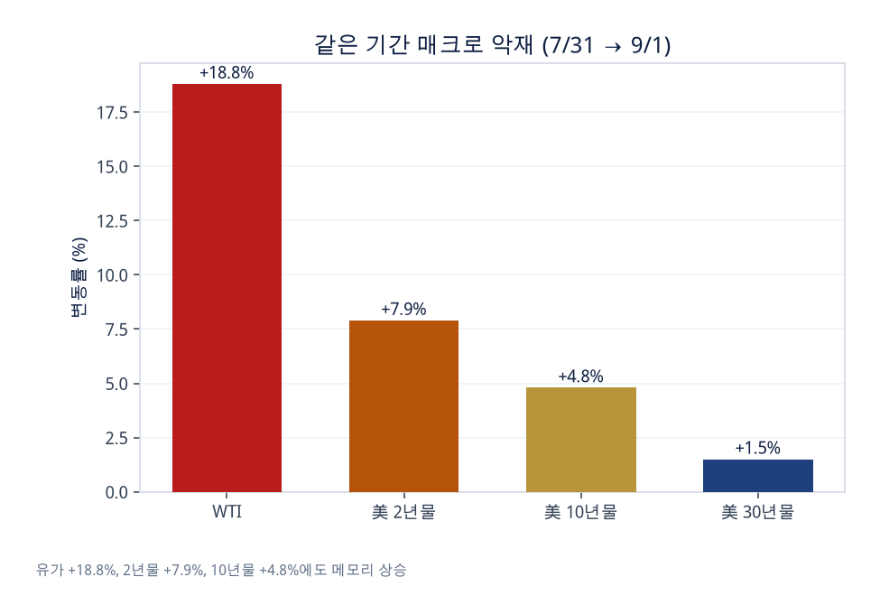
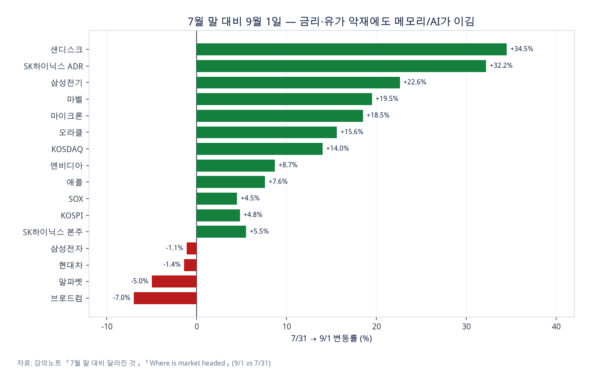
| 상황 | 10년물 | 장기채 가격 |
|---|---|---|
| 현재 | 5.0% | 100 |
| 신뢰받는 긴축 → 물가 기대 ↓ | 4.5% ↓ | 상승 |
| 경기침체까지 | 4.0% ↓ | 더 상승 |
| 유가+재정+국채공급 → 기간 프리미엄 ↑ | 금리 ↑ | 하락 |
과거 1%→0.5%가 큰 랠리였다면, 앞으론 5%→4%만으로도 가격은 오른다. 관건은 긴축이 인플레 기대를 낮추느냐. 30년물 5.3%대에서는 연기금·보험·해외가 받아줌(낙찰 5.308%, 응찰 2.61배, 간접 79.5%, PD 2.2%, WI -2.7bp). 9/24 바이백(잔존 20~30년)이 다음 시험대.
Fed 정책금리 전망. “앞으로 금리를 어떻게 움직일까?”
경기+물가+Fed+기간 프리미엄. “장기 할인율은?”
장기 인플레+재정+국채 공급. “정부 장기 조달 위험은?”
| 경로 | 금리 | 장기금리 |
|---|---|---|
| 유가 안정 + 기대인플레 안정 | 9월 인상 후 추가 인상 필요 ↓ | 안정 |
| 유가 고공 + 기대 고착 | 10월 이후 추가 인상 가능 ↑ | 재상승 |
9/11 미국장: CPI +3.4% YoY / +0.4% MoM 부합, Core +0.3% MoM(예상 +0.2% 상회). 그런데도 SOX +1.8% — 금리 악재보다 반도체 기대. 금리 경로 스케치: 기존 12월 인상 → 9월 인상 → 10월 연속 인상 가능성 낮음 → 유가·물가 확인. 채권: 단기↑ ↔ 장기↓ 가 동시에 가능한 구간.
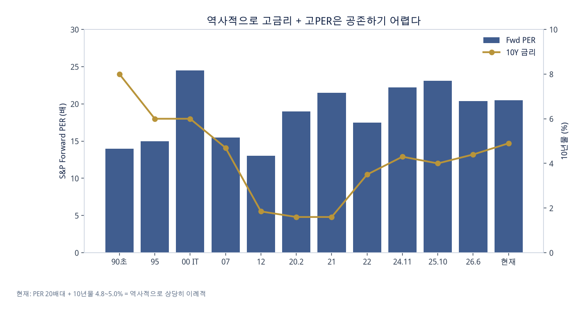
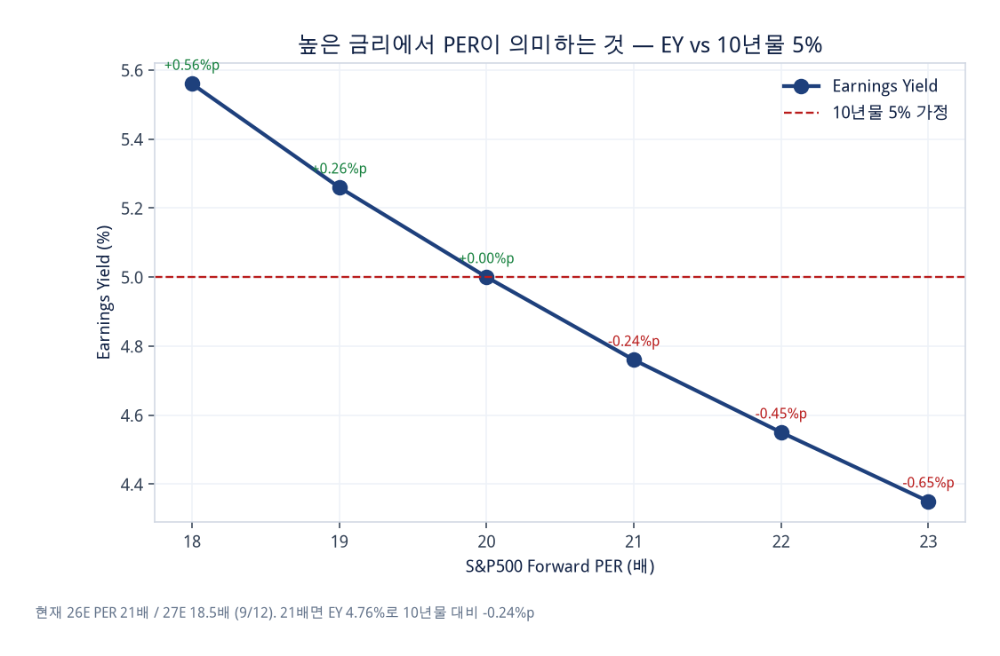
| 노동생산성 | 노동투입 | 실질 GDP | 물가 | 명목 GDP(g) |
|---|---|---|---|---|
| 1.0% | +0.5% | 1.5% | +2.5% | 4.0% |
| 1.5% | +0.5% | 2.0% | +2.5% | 4.5% |
| 2.0% | +0.5% | 2.5% | +2.5% | 5.0% |
| 2.5% | +0.5% | 3.0% | +2.5% | 5.5% |
AI 생산성이 명목 g를 올리면 고금리 환경의 PER를 지탱하는 유일한 펀더멘털 논거. 다시 KEY 질문으로 돌아온다.
다만 원문 밸류 시트: 원화 강세 10% ≈ 삼전닉스 약 12% 하락 요인. 환율은 별도 민감도.
SOX는 급락했으나 7/29 바닥 근처는 멀고, 다음날 급반등 대비 소폭 하락 반전 수준. MS +2%, GOOGL +3.2%, IGV +5.0%로 순환. “곡괭이를 좀 줄이는” 심리 반영은 타당, 그 이상 액션의 명분/증거는 대기.
7/29 바닥 대비 하이닉스 ADR +18% / +38%가 군계일학. 한국 삼전닉스 반등폭이 미국보다 컸던 구간과 대비해 볼 것.
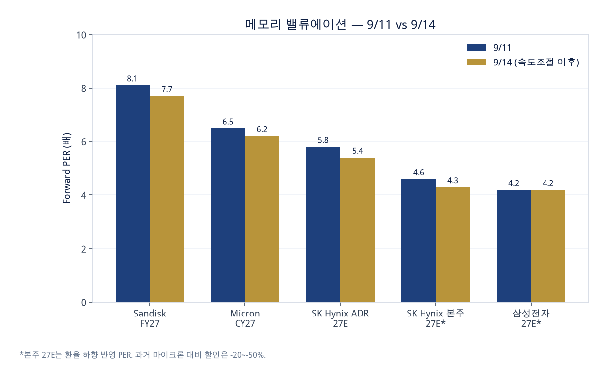
| 구분 | 9/11 | 9/14 | 메모 |
|---|---|---|---|
| Sandisk | $1,633 / FY27 PER 8.1 | $1,552 / 7.7 | EPS $201 가정 |
| Micron | $975 / CY27 PER 6.5 | $924 / 6.2 | EPS $150 컨센 |
| 하이닉스 ADR | $190=255만 / 5.8~6.5배 | $176=237만 / 5.4~6.0배 | 과거 vs MU -20~-50% → 지금은 대등~소폭 할인 |
| 하이닉스 본주 | 181.2만 / 26E 5.2 · 27E 4.2→4.6 | 169.7만 / 4.8 · 3.9→4.3 | ADR 대비 할인 = 본주 매력 |
| 삼성전자 | 25.95만 / 5.4 · 3.9→4배대 | 24.9만 / 5.2 · 3.8→4.2 | MU 대비 ~30%대 할인 |
| 26년 OP / EPS | 27년 OP / EPS | 27 YoY | |
|---|---|---|---|
| SK하이닉스 | 266조 / 350K | 392조 / 436K → 392K? | 이익 +25% / EPS +38% 가정, 환율 -10% 가능 |
| 삼성전자 | 392조 / 48.1K | 543조 / 66.4K → 60K? | 동일 |
하이닉스 210만~245만, 삼성 28.9만~33.7만. 과거 사이클 주식 4~8배 밴드.
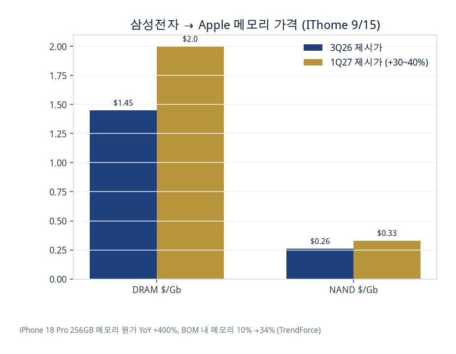
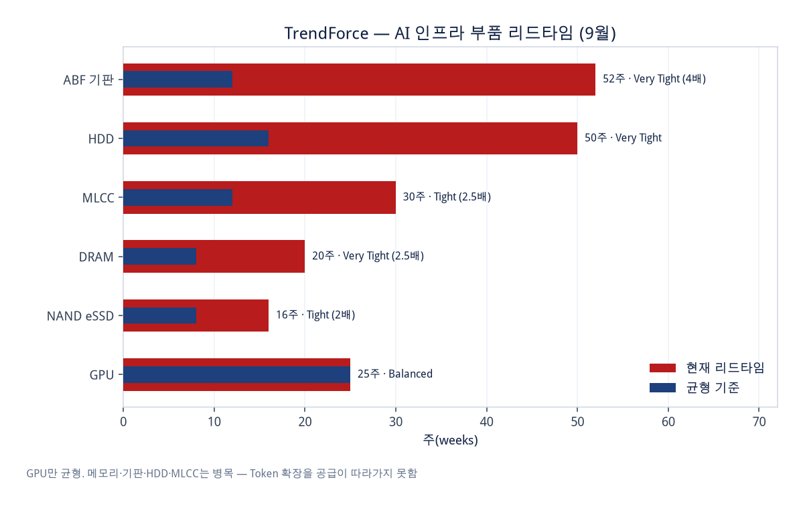
무라타: AI 서버 MLCC + 고내열, 수요 최소 2028까지. 2년 800억엔 증설, 이후 3~5년 추가 건물 검토. 가격은 장기 신뢰 — 잦은 인상은 신규 진입을 부름. 하이엔드 부하로 로우엔드 점유 우선순위는 낮아짐. 전원 모듈·6G·피지컬 AI. 영향: 28년까지 가시성 확인, 경쟁사 가격만 경계. 중립~긍정
| 주장 | 판단 |
|---|---|
| PC에서 작은 LLM은 처참하다 | 대체로 맞음 |
| 그러므로 온디바이스는 쓸모없다 | 틀림 |
| 칩에 최적화하면 쓸 만하다 | 맞음 |
| 아이폰이 ChatGPT를 대체한다 | 아님 |
| 복잡한 AI는 클라우드와 결합 | 맞음 |
3B + 2-bit 양자화 + LoRA + Neural Engine. AFM 3 Core Advanced는 모델을 NAND에 두고 선택 활성화 — DRAM 한계 우회. 기능↑ → NAND 중요성↑. LPDDR + NAND + Memory Tiering.
연료전지의 상품은 효율이 아니라 Time-to-Power. 원전은 규모·24시간·저탄소. LNG는 가장 현실적인 경쟁자.
송전망 5년을 기다리지 않음. 50~200MW에서 가장 매력. PJM 혼잡비용 26H1 약 $60억.
1GW급에서 경제성. Google 615MW 25년 구매. 건설+인허가 때문에 “지금 필요한 전력”의 해법은 아님.
| 규모 | 해법 |
|---|---|
| 50~200MW | 연료전지 매우 매력 (PAFC/SOFC) |
| 200~500MW | FC 100~300MW + LNG/Grid |
| 500MW~1GW | 원전/LNG/대형 Grid 중심, FC는 보완 |
| 1GW+ | 원전+Grid+LNG/재생+ESS. FC만으로는 비경제 |
시간축: 단기 Grid+LNG+FC+BESS → 중기 +Nuclear+재생 → 장기 Nuclear+재생+Grid+BESS.
| 기술 | 포지션 | 기업 |
|---|---|---|
| PAFC | 검증·국내 레퍼런스 | 두산퓨얼셀. 미국 DC ~5,000억, 내년 3월~, OPM 6~7%, CAPA 350MW |
| SOFC | 고효율 50~60% · 모듈 · 고밀도 | Bloom, SK이터닉스, 미코. CHP 시 총효율 90% 가능하나 DC 열수요는 작음 |
| PEMFC | 다른 영역 | 범한퓨얼셀 |
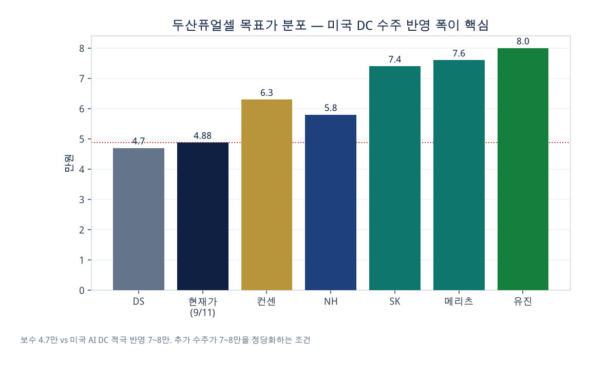
웨스팅하우스 지분 15% 타진 보도 = 원전 축의 별도 옵션. 연료전지와 대체재가 아니라 시간축이 다른 보완재.
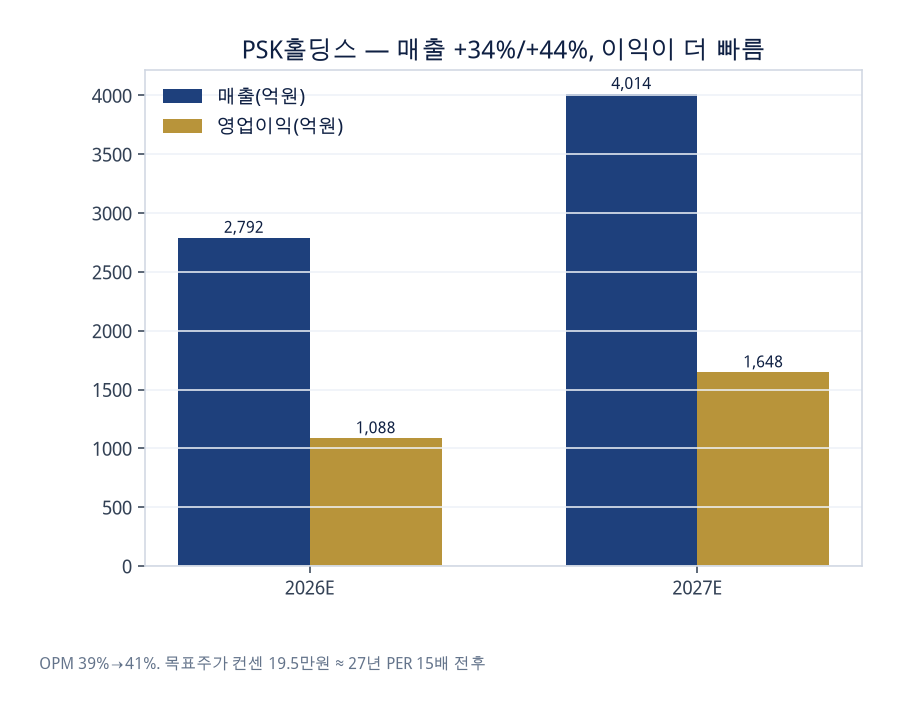
| 장비 | 역할 | 왜 AI에서 커지나 |
|---|---|---|
| Dry Strip (SUPRA) | PR·폴리머 플라즈마 제거. 20년+ 점유 1위 | HBM·3D NAND·GAA에서 Wet보다 손상↓. Throughput·Low CoO |
| Descum (ECOLITE) | 수 nm 잔류막만 선택 제거 | RDL/Bump 불량 방지. HBM·FO·Chiplet·글래스·PLP |
| Fluxless Reflow (GENEVA) | Flux 없이 접합, 세계 최대 점유 | 미세 Pitch에서 Flux 잔류=수율 킬러. Warpage·Throughput |
| 이름 | 포인트 |
|---|---|
| 삼현 | SEC 액추에이터 품질인증 진행. Figure AI 4세대(2027) 모터 협상. CES 2027 전후 재평가. 보스턴다이나믹스–현대 패턴 재현 가능. |
| 레인보우 | 미국 생산시설, 로봇 수출 재개 보도. |
| 로보티즈 · SPG | 테마 대표 / 감속기. |
| 삼성 SDS RX | 계열 공장 실증·오케스트레이션이 상용화 속도의 무기. |
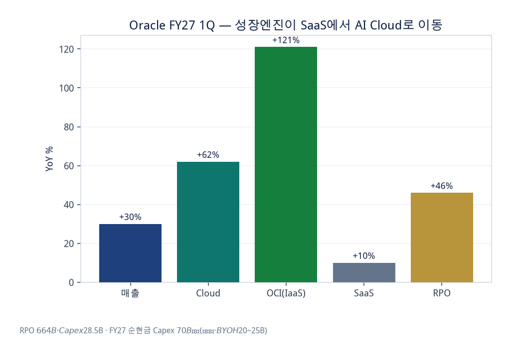
소프트웨어 대체 우려 후퇴 = 심리 회복 신호. 그러나 매각·차환·현금흐름으로 확인. 기존 소프트웨어 대출의 과도 할인 vs 신규 AI 인프라 금융의 낙관(금리·담보가 위험을 보상하는가)을 분리.
산술 3%면 조 단위 가능. 선례: 동양생명 1,400억→70억(95% 감경). 지금은 불확실성 프리미엄. 보험이 먼저 반응 가능. 더 깊은 이슈는 은행 AI·데이터 활용 위축. 금융주 급락 시 이 뉴스 vs 고유가·금리 디레이팅을 분리.
① 하이퍼스케일러 CapEx 가이던스 ② GPU/HBM 발주·선급금 ③ DC 착공·가동 일정 ④ 모델 출시 일정과 안전 검증 기간. 이 체인에서 연속 지연이 나오면 그때는 Timing Downside.
| 우선 | 항목 | 왜 |
|---|---|---|
| 1 | 빅테크 CapEx 가이던스 | 이번 조정이 펀더멘털인지 멀티플인지의 판정자 |
| 2 | 실제 발주 / 선급금 | 가이던스와 집행의 갭 = Timing |
| 3 | 10년물 vs 5.3% 수요대, 유가 $100 안착 | 성장주 할인율 |
| 4 | HBM4 주문/가격, 모바일 vs 서버 가격차 | 메모리 업사이클 지속성 |
| 5 | 강제 테스트·독립감사 법제화 여부 | ①→⑤ 규제의 실체화 |
| 6 | 기업 AI 사용·생산성 케이스 | KEY 질문의 유일한 실증 |
경계심 반영(곡괭이 일부 축소)은 타당. Perp·SOX 변동성. 증거 없는 추가 액션은 대기. FOMC 점도표·SEP·케빈 발언.
Token × Agent × 메모리 계층(HBM+DDR5+NAND+CXL). ASIC 비중 상승과 GPU 공존. 전력 Time-to-Power.
금리 핸디캡을 이기는 ROIC. 본주 할인 vs ADR 프리미엄. 테마(로봇)는 인증→계약→CES 순서. 넘버가 더 뚜렷한 대안과 비교.
지금은 Peak-out을 논할 단계가 아니라 Timing Risk를 점검할 단계. AI 성장률보다 중요한 것은 CapEx 집행 속도. AI 종말론보다 중요한 것은 생산성의 확장. 그리고 그 확장이 숫자로 나타나는지 — 가이던스, 발주, 토큰, 메모리 가격 — 를 보면 된다.
자료: 「AI 속도조절론의 2가지 다른 견해」「AI종말론, 속도조절론, 결국 현재속도로도 생산성 이득 충분한가」「Pacing the Frontier」「AI 종말론까지 말이 나오면」「연료전지」「9월 11·12일」「9월 13일 장기금리 new normal / Astra·ASIC / 젠슨」「Where is market headed」「S&P PER vs 10년물」「메모리 밸류 9/11·9/14」「TalkFile_ai개발속도」「매크로 9.14」「7월 말 대비 달라진 것」「9월 14일 미국장」「SFA반도체」및 당일 Quick 코멘트. 차트 숫자는 원문 표기값을 재구성.